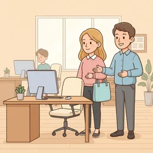
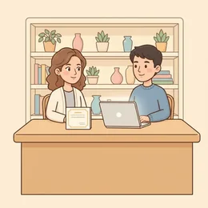

deutschoderwas · Sprechclub · Woche 4 · Strang C · Teil 2 · Mittwoch, 7. Oktober
Die Debatte: wechseln, solange es gut läuft?
Die einen sagen: Wer bleibt, verpasst etwas. Die anderen: Wer alle zwei Jahre wechselt, lernt nie etwas zu Ende. Heute wird beides vertreten — und zwar von jedem einmal.
Dein Niveau
Gleiches Thema, andere Sätze. Wechsle jederzeit — probier ruhig beide Seiten aus.
Zwei Sätze, die beide stimmen
„Wer nie wechselt, verliert den Anschluss.“ und „Wer ständig wechselt, kommt nie an.“ Beide Sätze hört man ständig, und beide haben Recht — nur nicht gleichzeitig für dieselbe Person.
Welchem der beiden Sätze stimmst du eher zu?
Wie oft sollte man deiner Meinung nach wechseln?
Kennst du jemanden, der zu lange geblieben ist?
Ab wann wird Wechseln zur Flucht statt zur Entwicklung?
Zählt lange Betriebszugehörigkeit in deinem Land als Stärke oder als Stillstand?
Verändert sich das gerade — und wenn ja, warum?
🔑 Die Regel für heute: Wer die Gegenseite nicht in drei guten Sätzen vertreten kann, hat sie nicht verstanden. Deshalb tauscht jeder heute mindestens einmal die Seite.
Der Unterschied zwischen Meinung und Argument
„Ich finde, man sollte bleiben.“ ist eine Meinung. „Wer drei Jahre bleibt, übernimmt erst dann Verantwortung — und genau daran wächst man.“ ist ein Argument. Der Unterschied ist eine Begründung und ein Beispiel.
Was fehlt einer Meinung, damit sie ein Argument wird?
Welches Argument aus deinem Umfeld überzeugt dich?
Warum wirken Zahlen manchmal überzeugender als Erfahrungen?
Wann ist ein Einzelfall trotzdem ein gutes Argument?
💡 Die Drei-Schritt-Formel:Behauptung + Begründung + Beispiel.„Wechseln lohnt sich finanziell. Denn beim Wechsel wird neu verhandelt. Eine Kollegin von mir hat so zwölf Prozent mehr bekommen.“
Kurz zurück: Montag in zwei Minuten
Falls du Teil 1 verpasst hast — das hier reicht, um heute mitzudiskutieren.
So ging der SatzIch wechsle, weil ich nichts mehr lerne. Ich lerne nichts mehr, deshalb wechsle ich.
Gründe zeigen nach vorn
So ging der SatzIch habe dort viel gelernt, und genau deshalb suche ich jetzt den nächsten Schritt.
Sag denselben Grund einmal mit weil und einmal mit deshalb.
Warum steht bei trotzdem das Subjekt hinter dem Verb?
Nenne drei Wörter aus Teil 1 mit Artikel.
🔁 Zu zweit, dreißig Sekunden: Einer nennt einen Grund fürs Gehen, der andere sofort einen fürs Bleiben. Danach geht es weiter — heute muss jeder beide Seiten vertreten können.
Zwölf Wörter für die Debatte
Sagt jedes Wort laut — mit Artikel. Diese Wörter braucht ihr gleich, wenn ihr die Gegenseite vertreten müsst.
📊
der Arbeitsmarkt
„Auf dem Arbeitsmarkt werden Fachkräfte gerade gesucht.“
💡 Dazu gehören der Fachkräftemangel und die Nachfrage. In Debatten heißt es oft: Der Markt ist gerade auf Ihrer Seite.
🛡️
die Sicherheit
„Sicherheit ist für viele wichtiger als ein höheres Gehalt.“
💡 Das Gegenteil ist die Unsicherheit, und dazwischen liegt das Risiko. Achte auf den Unterschied zu die Sicherheit im Sinne von Schutz.
🎲
das Risiko
„Jeder Wechsel ist ein Risiko — auch ein gut vorbereiteter.“
💡 Das Verb ist riskieren, und die Wendung ein Risiko eingehen ist die häufigste. Plural: die Risiken, nicht Risikos.

die Erfahrung
„Erfahrung sammelt man nur, wenn man lange genug bleibt.“
💡 Zwei Wendungen: Erfahrung sammeln und Erfahrungen machen. Die erste ist beruflich, die zweite eher persönlich.
der Lebenslauf
„Im Lebenslauf fallen viele kurze Stationen auf.“
💡 Auch der CV genannt. Und wenn Zeiten fehlen, spricht man von einer Lücke im Lebenslauf — ein Wort, das in jedem Bewerbungsratgeber steht.
die Routine
„Routine macht schnell, aber sie macht auch blind.“
💡 Zweiseitig gemeint: Routine haben ist positiv (Sicherheit im Können), in Routine verfallen ist negativ. Der Zusammenhang entscheidet.
die Chance
„Diese Chance bekommt man selten zweimal.“
💡 Feste Wendungen: eine Chance ergreifen, eine Chance verpassen, die Chance stehen gut. Sprich das a wie im Französischen: Schangs.
die Zufriedenheit
„Zufriedenheit lässt sich schwer in Zahlen messen.“
💡 Das Adjektiv ist zufrieden und steht mit mit: Ich bin mit der Aufgabe zufrieden. Nicht verwechseln mit glücklich — Zufriedenheit ist leiser.

sich weiterentwickeln
„Man kann sich auch entwickeln, ohne die Firma zu verlassen.“
💡 Reflexiv, also immer mit sich: Ich entwickle mich weiter. Das Nomen dazu ist die Entwicklung.
📆
die Betriebszugehörigkeit
„Mit langer Betriebszugehörigkeit steigt auch die Kündigungsfrist.“
💡 Ein typisch deutsches Wortungetüm — im Gespräch sagt man einfach Wie lange sind Sie schon dabei? Aber im Vertrag steht das lange Wort.
🦘
der Jobhopper
„Früher galt ein Jobhopper als unzuverlässig.“
💡 Ein englisches Wort, das im Deutschen völlig üblich ist — und meist leicht abwertend gemeint. Die deutsche Umschreibung: häufige Wechsel im Lebenslauf.
die Verhandlung
„Beim Wechsel hat man die bessere Verhandlungsposition.“
💡 Das Verb ist verhandeln — über etwas verhandeln oder etwas verhandeln. Und Verhandlungsbasis ist das Wort, das in Stellenanzeigen steht.
💡 Spiel „Gegenseite in zehn Sekunden“: Einer sagt ein Argument. Der andere muss in zehn Sekunden das stärkste Gegenargument nennen — nicht das billigste. Wer nur widerspricht, ohne zu begründen, gibt ab.
Die drei Argumente jeder Seite
Erst die stärksten Argumente von beiden Seiten, dann drei Satzpaare, an denen man merkt, wie schnell ein gutes Argument zu einer Behauptung schrumpft.
🚀
Pro Wechsel
Beim Wechsel wird neu verhandelt — Gehalt, Aufgabe, Rolle. Intern bewegt sich meist wenig.
Wer wechselt, verhandelt. Wer bleibt, wartet.
🌱
Pro Bleiben
Verantwortung bekommt man erst, wenn man das Haus kennt. Das dauert länger als zwei Jahre.
Vertrauen wächst nicht in der Probezeit.
🎯
Die dritte Position
Nicht die Dauer entscheidet, sondern ob man noch etwas lernt.
Die Frage ist nicht wie lange, sondern wofür.
✅ So klingt ein Argument
Beim Wechsel wird neu verhandelt — eine Kollegin hat so zwölf Prozent mehr bekommen.
Warum das trägtBehauptung, Begründung, Beispiel. Das Beispiel macht aus einer Meinung etwas, worüber man reden kann.
❌ So klingt eine Behauptung
Wechseln lohnt sich einfach mehr.
Das Problemeinfach ersetzt hier die Begründung. Der andere kann nur zustimmen oder widersprechen — ein Gespräch entsteht nicht.
✅ So klingt ein Argument
Zwar verdient man beim Wechsel oft mehr, aber die ersten Monate kosten Kraft.
Warum das trägtzwar … aber nimmt die Gegenseite ernst und setzt trotzdem einen eigenen Punkt. Das wirkt souverän statt stur.
❌ So nicht
Zwar verdient man beim Wechsel oft mehr, aber ich finde das trotzdem falsch.
Das ProblemNach dem aber kommt kein Argument, sondern nur die Meinung zurück. Das zwar war dann reine Höflichkeit.
✅ So klingt ein Argument
Je länger man bleibt, desto schwerer fällt der erste Schritt.
Warum das trägtje … desto verbindet zwei Entwicklungen. Achtung auf die Stellung: im je-Teil Verb ans Ende, im desto-Teil direkt nach desto + Vergleichsform.
❌ So nicht
Je länger man bleibt, desto es fällt schwerer.
Das ProblemNach desto muss sofort die Vergleichsform kommen (desto schwerer), dann das Verb, dann das Subjekt.
Vier Schritte, immer in dieser Reihenfolge:
Behauptung in einem Satz:Ein Wechsel lohnt sich finanziell. Kurz, klar, ohne irgendwie.
Begründung mit weil oder denn:… weil beim Wechsel neu verhandelt wird.
Beispiel oder Zahl:Eine Kollegin hat so zwölf Prozent mehr bekommen.
Einschränkung mit zwar … aber:Zwar kostet der Anfang Kraft, aber das ist einmalig. Damit nimmst du dem anderen den Einwand vorweg.
Und wenn du gar nicht weiterweißt: Frag zurück. „Woran würdest du merken, dass es der richtige Moment ist?“ ist immer ein gültiger Beitrag.
🎯 Zu zweit, eine Minute: Einer nennt seine echte Meinung. Der andere muss sie mit zwar … aber ernst nehmen und trotzdem widersprechen. Danach tauschen.
Vier Bausteine für die Diskussion
Position beziehen, abwägen, widersprechen, zusammenfassen. Mehr Redemittel braucht keine Debatte — aber diese vier braucht sie wirklich.
1 · 🎯 Position beziehen Ich bin der Meinung, dass …Für mich spricht dafür, dass …Meiner Erfahrung nach …
So klingt esIch bin der Meinung, dass man wechseln sollte, solange man noch etwas riskieren kann.
2 · ⚖️ Abwägen Einerseits …, andererseits …Zwar …, aber …Es kommt darauf an, ob …
So klingt esEinerseits verdient man mehr, andererseits fängt man wieder ganz unten an.
3 · ✋ Widersprechen Da bin ich anderer MeinungDas sehe ich anders, weil …Stimmt schon, aber …
So klingt esDas sehe ich anders, weil Erfahrung eben Zeit braucht.
4 · 🧵 Zusammenfassen Am Ende geht es darum, ob …Wir sind uns einig, dass …Uneinig sind wir bei …
So klingt esAm Ende geht es darum, ob man noch dazulernt — nicht darum, wie lange man bleibt.
1 · 🎯 Zugespitzt beginnen Ich würde sogar so weit gehen zu sagen, …Entscheidend scheint mir, dass …Bei allem Verständnis: …
So klingt esIch würde sogar so weit gehen zu sagen, dass Loyalität heute schlechter bezahlt wird als Wechselbereitschaft.
2 · ⚖️ Fein abwägen Je …, desto …Nicht nur …, sondern auch …Das gilt allerdings nur, solange …
So klingt esJe länger man bleibt, desto teurer wird der Absprung — allerdings nur, solange man nichts Neues dazulernt.
3 · ✋ Sauber widersprechen Da würde ich unterscheiden zwischen …Das trifft auf … zu, auf … dagegen nichtGenau das Gegenteil beobachte ich
So klingt esDa würde ich unterscheiden zwischen einem Wechsel aus Neugier und einem aus Frust — das sind zwei ganz verschiedene Dinge.
4 · 🧵 Souverän schließen Festhalten lässt sich, dass …Der eigentliche Streitpunkt ist …Da kommen wir wohl nicht zusammen, und das ist in Ordnung
So klingt esDer eigentliche Streitpunkt ist nicht die Dauer, sondern die Frage, wer die Verantwortung für die Entwicklung trägt.
Verb die Position der Ton Höflichkeit
📣 Sofort anwenden: Diskutiert zu zweit drei Minuten. Regel: Jede Antwort muss mit einem Baustein aus einer anderen Spalte beginnen als die vorige. Wer denselben zweimal hintereinander nimmt, verliert das Wort.
Vier Streitgespräche — zwei Runden
Runde 1: Lest zu zweit laut. Runde 2: Deckt die Zeilen von B ab und widersprecht frei — die Hinweise reichen.
Dialog 1 · „Alle zwei Jahre wechseln?“
A findet häufige Wechsel selbstverständlich, B hält das für einen Fehler.
A
Ich verstehe nicht, warum man länger als zwei Jahre bleiben sollte.
B
Zwar verdient man beim Wechsel oft mehr, aber Verantwortung bekommt man erst, wenn man das Haus kennt.
🗣️ zwar … aber nimmt das Argument des anderen ernst — und setzt trotzdem einen eigenen Punkt.tippen = Hilfe zeigen
A
Das dauert doch keine zwei Jahre.
B
Bei uns schon. Je größer die Firma, desto länger dauert es, bis man wirklich mitreden darf.
🗣️ je … desto — im ersten Teil Verb ans Ende, im zweiten sofort die Vergleichsform.tippen = Hilfe zeigen
A
Dann ist die Firma das Problem, nicht der Wechsel.
B
Guter Punkt. Da würde ich unterscheiden zwischen einem Wechsel aus Neugier und einem aus Frust.
🗣️ Erst anerkennen, dann differenzieren. unterscheiden zwischen steht mit Dativ.tippen = Hilfe zeigen
A
Und wenn beides zusammenkommt?
B
Dann würde ich gehen. Aber erst, nachdem ich einmal offen gesagt habe, was mir fehlt.
🗣️ nachdem leitet einen Nebensatz ein — Verb ans Ende, und die Zeitform springt eine Stufe zurück.tippen = Hilfe zeigen
Dialog 2 · „Loyalität oder Naivität?“
B ist seit zwölf Jahren in derselben Firma. A findet das erstaunlich — und ein bisschen naiv.
A
Zwölf Jahre! Hast du nie überlegt zu gehen?
B
Doch, dreimal. Geblieben bin ich, weil sich die Aufgabe jedes Mal verändert hat.
🗣️ Doch widerspricht einer verneinten Erwartung — und dann ein weil-Satz.tippen = Hilfe zeigen
A
Trotzdem verdienst du wahrscheinlich weniger als jemand, der zweimal gewechselt hat.
B
Möglich. Andererseits habe ich hier zwei Teams aufgebaut — das steht in keinem Gehaltszettel.
🗣️ Möglich. als Zugeständnis, dann andererseits mit Umstellung.tippen = Hilfe zeigen
A
Aber nach außen sieht es aus, als wärst du stehen geblieben.
B
Das höre ich oft. Genau das Gegenteil beobachte ich allerdings bei den Leuten, die alle zwei Jahre neu anfangen.
🗣️ Genau das Gegenteil beobachte ich — eine der stärksten Wendungen, um zu widersprechen.tippen = Hilfe zeigen
A
Inwiefern?
B
Sie sind überall gut angekommen und nirgends richtig fertig geworden.
🗣️ Ein Bild statt einer Erklärung. In Debatten bleibt so ein Satz hängen.tippen = Hilfe zeigen
Dialog 3 · „Geht es nur ums Geld?“
A sagt, beim Wechsel gehe es immer ums Gehalt. B widerspricht — und nimmt trotzdem etwas an.
A
Seien wir ehrlich: Am Ende wechselt man wegen des Geldes.
B
Stimmt schon, dass beim Wechsel neu verhandelt wird. Nur ist das Ergebnis, nicht der Grund.
🗣️ Stimmt schon, dass … gibt nach und setzt dann sofort nach. Sehr elegant.tippen = Hilfe zeigen
A
Und was ist dann der Grund?
B
Bei den meisten, die ich kenne: das Gefühl, nicht mehr gebraucht zu werden.
🗣️ Ein Beispiel aus dem eigenen Umfeld — überprüfbar, deshalb stark.tippen = Hilfe zeigen
A
Das ist doch nur ein Gefühl.
B
Nicht nur. Es zeigt sich daran, wer zu welchen Besprechungen eingeladen wird.
🗣️ Nicht nur. plus konkreter Beleg. So wird aus einem Gefühl ein Argument.tippen = Hilfe zeigen
A
Da hast du wahrscheinlich recht.
B
Festhalten lässt sich also: Geld ist der Anlass, Anerkennung der Grund.
🗣️ Festhalten lässt sich — die sachlichste Art, eine Debatte zusammenzufassen.tippen = Hilfe zeigen
Dialog 4 · „Die Gegenseite vertreten“
Übung: A muss die Position vertreten, die er selbst nicht teilt. B prüft, ob es überzeugend klingt.
A
Also gut, ich bin heute für Bleiben — obwohl ich es nicht bin.
B
Dann leg los. Und keine halben Sätze: Behauptung, Begründung, Beispiel.
🗣️ Die Drei-Schritt-Formel als Spielregel — daran misst man jedes Argument.tippen = Hilfe zeigen
A
Wer bleibt, wird gefragt. Denn Vertrauen entsteht nicht in der Probezeit.
B
Gute Behauptung, gute Begründung. Es fehlt das Beispiel.
🗣️ Freundliche Rückmeldung in zwei Teilen: was gut war, was fehlt.tippen = Hilfe zeigen
A
In meinem alten Team durfte erst der die Kunden betreuen, der drei Jahre dabei war.
B
Jetzt trägt es. Merkst du, dass es überzeugender klingt als deine eigene Position vorhin?
🗣️ Merkst du, dass … — eine Frage, die zum Nachdenken zwingt, ohne zu belehren.tippen = Hilfe zeigen
A
Peinlicherweise ja.
B
Genau darum machen wir das. Wer die Gegenseite nicht erklären kann, hat sie nicht verstanden.
🗣️ Der Merksatz der ganzen Stunde — und er gilt weit über dieses Thema hinaus.tippen = Hilfe zeigen
🎭 Und jetzt ihr: Sucht euch die Position, die ihr nicht teilt, und vertretet sie drei Minuten lang. Der Partner unterbricht bei jeder Behauptung ohne Begründung.
🧩 Abwägen: je … desto, zwar … aber
Vier Satzmuster, mit denen man zwei Dinge gegeneinanderstellt, ohne stur zu wirken. Jedes hat seine eigene Wortstellung — und genau daran erkennt man geübte Sprecher.
je … desto verbindet zwei Entwicklungen: Im je-Teil steht die Vergleichsform gleich hinter je und das Verb am Ende; im desto-Teil kommt zuerst die Vergleichsform, dann das Verb, dann das Subjekt: Je länger man bleibt, desto schwerer fällt der Absprung.zwar … aber gibt zuerst nach und setzt dann dagegen: Zwar verdient man mehr, aber der Anfang kostet Kraft.einerseits … andererseits stellt zwei gleich starke Seiten nebeneinander — beide besetzen Position 1, das Verb folgt sofort. Und nicht nur … sondern auch addiert, statt abzuwägen.
📈je … desto = zwei EntwicklungenJe länger man bleibt, desto schwerer fällt der Absprung.
▾
🤝zwar … aber = nachgeben, dann dagegenhaltenZwar verdient man mehr, aber der Anfang kostet Kraft.
▾
⚖️einerseits … andererseits = zwei SeitenEinerseits lockt das Gehalt, andererseits verliert man das Netzwerk.
▾
➕nicht nur … sondern auch = addierenEs geht nicht nur ums Geld, sondern auch um Anerkennung.
je + VergleichsformJe länger
Rest, Verb ans Endeman bleibt,
desto + Vergleichsformdesto schwerer
Verb, dann Subjektfällt der Absprung.
Vier Muster, vier Wortstellungen
Lies jede Zeile laut. Es geht nicht darum, sie zu verstehen — das tust du schon. Es geht darum, sie zu sprechen, ohne zu stocken.
📈
je … desto
im je-Teil Verb ans Ende, im desto-Teil Verb vor Subjekt
Je länger man bleibt, desto schwerer fällt es.
🔁
zwar … aber
zwei Hauptsätze — nach zwar Umstellung, nach aber normal
Zwar verdient man mehr, aber es kostet Kraft.
⚖️
einerseits … andererseits
beide auf Position 1, Verb kommt sofort
Einerseits lockt es, andererseits schreckt es.
Je mehr man verdient, desto weniger spricht man darüber.Je früher man wechselt, desto leichter fällt es.Zwar ist der Anfang anstrengend, aber das ist einmalig.Einerseits lockt das Gehalt, andererseits fehlt das Netzwerk.Es geht nicht nur ums Geld, sondern auch um Anerkennung.Weder das Gehalt noch der Titel haben mich überzeugt.
Der Vergleich: größer, am größten, als oder wie
Ohne Vergleichsformen funktioniert keine Debatte. Drei Fallen stecken darin — und alle drei hört man in fast jeder Diskussion.
🅰️
als
bei Unterschied — nach der Vergleichsform
riskanter als …
🇼
wie
bei Gleichheit — nach so/genauso
genauso viel wie …
🔝
am … sten
die höchste Stufe
am wichtigsten · am meisten
✅ Der Wechsel ist riskanter als das Bleiben.❌ Der Wechsel ist riskanter wie das Bleiben.✅ Er verdient genauso viel wie vorher.✅ hoch → höher · gut → besser · viel → mehr · gern → lieber✅ am höchsten · am besten · am meisten · am liebsten✅ Je nach Branche ist es leichter oder schwerer.
🧱 Bau die Sätze selbst
Tippe die Teile in der richtigen Reihenfolge an. Danach auf „Prüfen“ — und den fertigen Satz laut lesen.
📖 Und jetzt im Zusammenhang
Eine Diskussion am Küchentisch, die niemand gewinnt. Wähle in jeder Lücke das passende Wort.
Drei Handgriffe, immer in dieser Reihenfolge:
Zwei Vergleichsformen suchen: länger / schwerer, mehr / weniger, früher / leichter.
Erster Teil:Je + Vergleichsform + Rest + Verb ans Ende: Je länger man bleibt,
Kontrolle: Stehen beide Vergleichsformen direkt hinter je und desto? Wenn nicht, stimmt etwas nicht.
Ein Satz zum Auswendiglernen, an dem man alles ablesen kann: „Je länger man bleibt, desto schwerer fällt der erste Schritt.“ Sag ihn dreimal — dann kommt das Muster von selbst.
🎭 Drei Debatten zu zweit
Zu zweit. Die Rollen werden zugeteilt, nicht gewählt — und nach der Hälfte wird getauscht.
1 · Wechseln, solange es gut läuft
A vertritt: Man sollte gehen, bevor es schlecht wird. B vertritt: Man geht erst, wenn man weiß, wohin. Beide müssen mit einem Argument der Gegenseite beginnen.
Ich bin der Meinung, dass …Zwar …, aber …Das sehe ich anders, weil …Am Ende geht es darum, ob …
Ich würde sogar so weit gehen zu sagen, …Je …, desto …Da würde ich unterscheiden zwischen …Der eigentliche Streitpunkt ist …
✅ Eine gute Runde enthältBeide beginnen mit einem Argument der Gegenseite, benutzen mindestens einmal zwar … aber und einmal je … desto, und jedes Argument hat ein Beispiel.
2 · Das Gegenangebot
A hat gekündigt und bekommt ein Gegenangebot. B ist die Führungskraft und will halten. Es geht nicht ums Gewinnen, sondern um eine ehrliche Klärung.
Es geht mir weniger ums Geld als um …Einerseits …, andererseits …Ich würde das gern schriftlich habenDarüber denke ich nach
Was müsste passieren, damit Sie bleiben?Nicht nur …, sondern auch …Das kann ich nicht versprechen, aber …Wann brauchen Sie eine Antwort?
✅ Eine gute Runde enthältNiemand sagt einfach Ja oder Nein. Am Ende steht eine konkrete Bedingung mit Frist — und beide haben mindestens einmal nachgegeben, ohne die eigene Position aufzugeben.
3 · Der Rat an die jüngere Schwester
B ist 24, hat ein gutes Angebot nach acht Monaten im ersten Job und will annehmen. A rät ab. Es geht um echte Sorge, nicht um Rechthaben.
Acht Monate sind sehr kurzWas steht danach im Lebenslauf?Zwar verstehe ich dich, aber …Überleg es dir noch eine Woche
Diese Chance bekomme ich selten zweimalJe länger ich warte, desto …Genau das Gegenteil beobachte ichWas wäre denn dein Kriterium?
✅ Eine gute Runde enthältA rät ab, ohne zu bevormunden; B verteidigt sich, ohne trotzig zu werden. Am Ende steht kein Sieg, sondern eine Frage, die beide mitnehmen.
🎴 Sprechkarten
Zieh eine Karte und sprich mindestens vier Sätze am Stück.
Deine Aufgabe
Tippe auf den Knopf.
⏱️ Die 90-Sekunden-Challenge
Ein Wort, anderthalb Minuten, freies Sprechen. Es muss nicht perfekt sein — es muss nur weitergehen.
Dein Wort
der Arbeitsmarkt
1:30
Bau es als Argument auf, dann trägt sich die Zeit von selbst:
Was behauptest du? Ich bin der Meinung, dass …
Warum? Das liegt vor allem daran, dass …
Ein Beispiel? Bei einer Kollegin von mir war es so, dass …
Und die Gegenseite? Zwar könnte man sagen, …, aber …
Und wenn dir das Beispiel fehlt: erfinde eines und sag es dazu. „Stell dir vor, jemand …“ ist in einer Debatte völlig erlaubt.
⏱️ Spielregel: In jeder Runde muss einmal zwar … aber und einmal je … desto vorkommen. Der Partner hebt die Hand, sobald beides da war.
✅ Sitzt es schon?
8 Fragen. Tippe auf deine Antwort — die Erklärung kommt sofort.
✍️ Lückentext
Wähle in jeder Lücke das passende Wort.
📣 Danach laut: Sagt reihum ein Argument. Der Nachbar muss es mit zwar … aber aufgreifen und dagegenhalten. Wer nur widerspricht, ohne aufzugreifen, gibt weiter.
📮 Deine Hausaufgabe bis nächste Woche
Vier kleine Aufgaben, zusammen etwa 25 Minuten. Tippe eine an, wenn du sie erledigt hast.
💡 Warum das hilft: Argumentieren braucht man überall — beim Vermieter, beim Arzt, in der Prüfung. Und zwar … aber ist die Wendung, mit der man widerspricht, ohne den anderen zu verlieren.
0 von 0 Aufgaben geschafft.
So sehen die Sätze aus:
zwar … aber: Zwar verdient man beim Wechsel mehr, aber die ersten Monate kosten Kraft.
zwar … aber: Zwar ist die Stelle sicher, aber ich lerne nichts Neues mehr.
je … desto: Je länger man bleibt, desto schwerer fällt der erste Schritt.
je … desto: Je größer die Firma, desto länger dauert eine Entscheidung.
je … desto: Je früher man wechselt, desto weniger riskiert man.
Achte im je-Teil auf das Verb am Ende: Je länger man bleibt — und im desto-Teil auf die Umstellung: desto schwerer fällt es.
So ist der Leserbrief aufgebaut:
Einstieg mit Bezug: In Ihrem Beitrag heißt es, häufige Wechsel verhinderten echte Erfahrung.
Eigene These: Ich halte das für zu pauschal, denn entscheidend ist nicht die Dauer, sondern die Aufgabe.
Zugeständnis: Zwar braucht Verantwortung Zeit, aber Zeit allein schafft noch keine Verantwortung.
Beispiel: In meinem Umfeld hat jemand nach zehn Jahren dieselbe Aufgabe wie am ersten Tag.
Schluss mit Frage: Die eigentliche Frage lautet daher: Wer trägt die Verantwortung für die Entwicklung — die Firma oder man selbst?
Ein Leserbrief endet stark, wenn er mit einer Frage schließt statt mit einer Wiederholung. Das lädt zum Weiterdenken ein, statt den Punkt zu setzen.
📬 Abgabe: Schick deine Sprachnachricht bis Sonntag in die WhatsApp-Gruppe. Ich höre jede an und antworte dir persönlich.
🔜 Nächste Woche, Strang C:Wie gesund muss Essen sein? — von Zucker bis Zutatenliste, und ob der Staat sich einmischen darf.